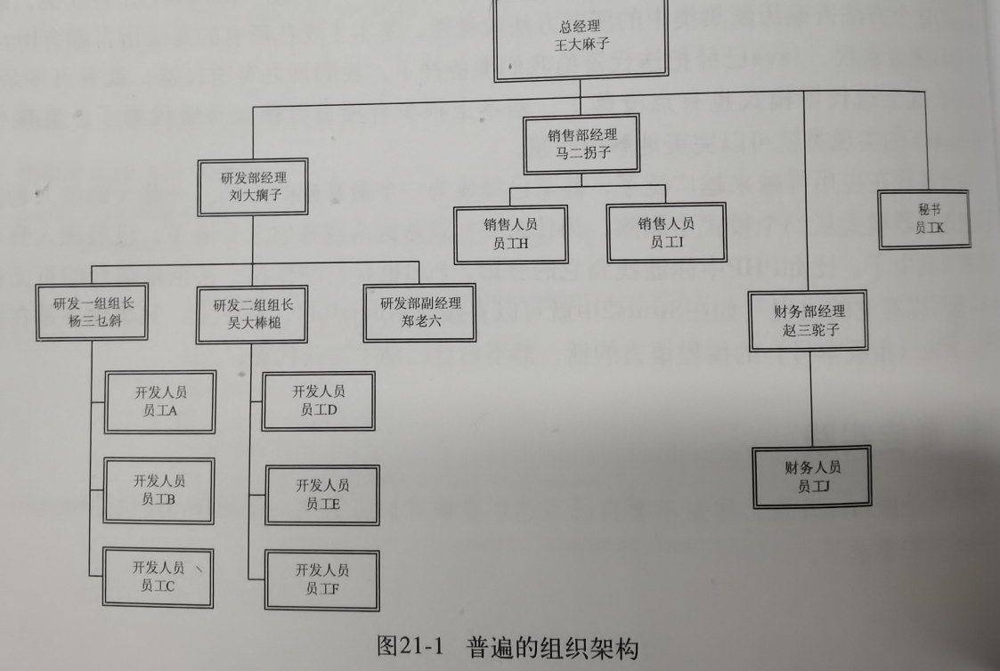
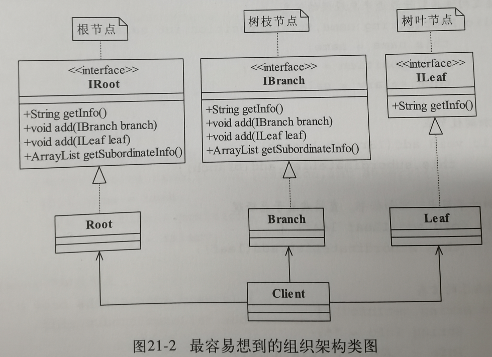
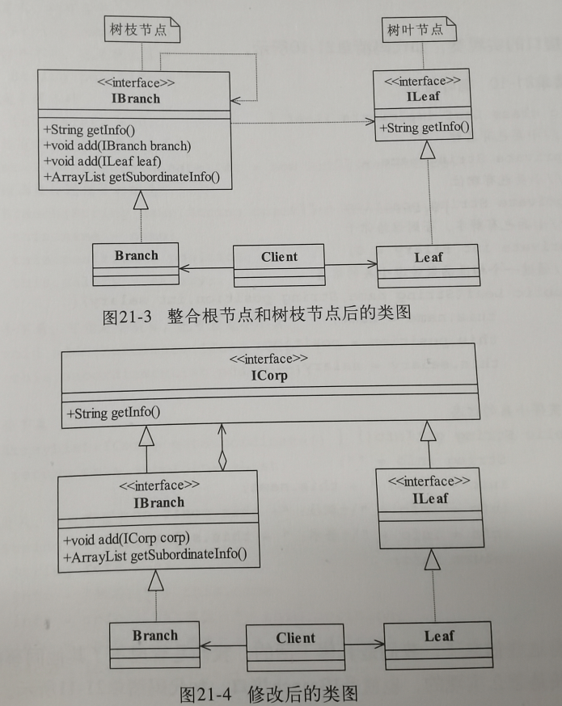
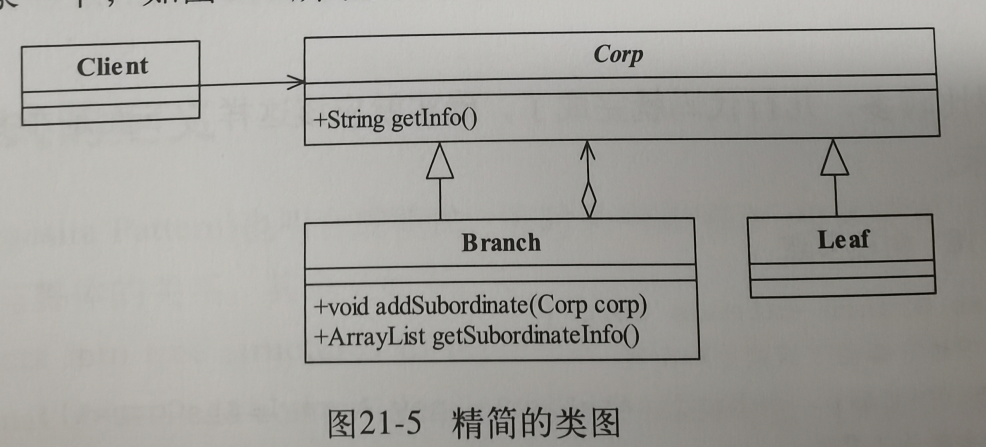
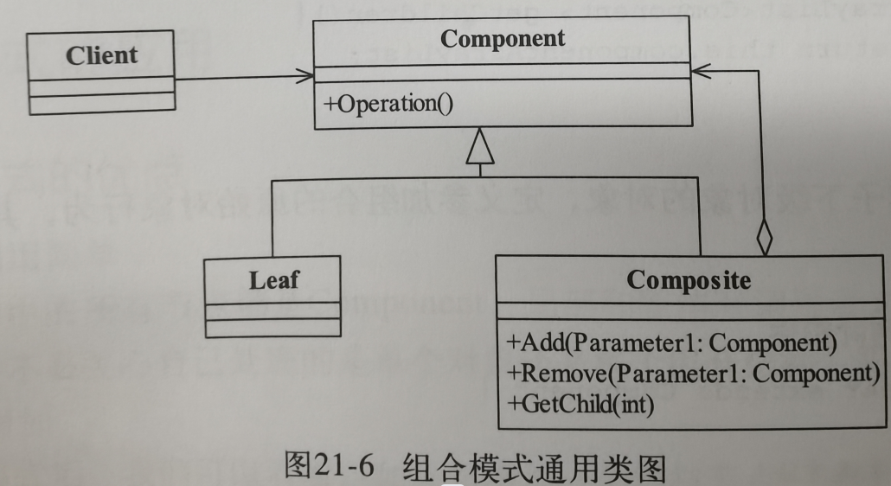
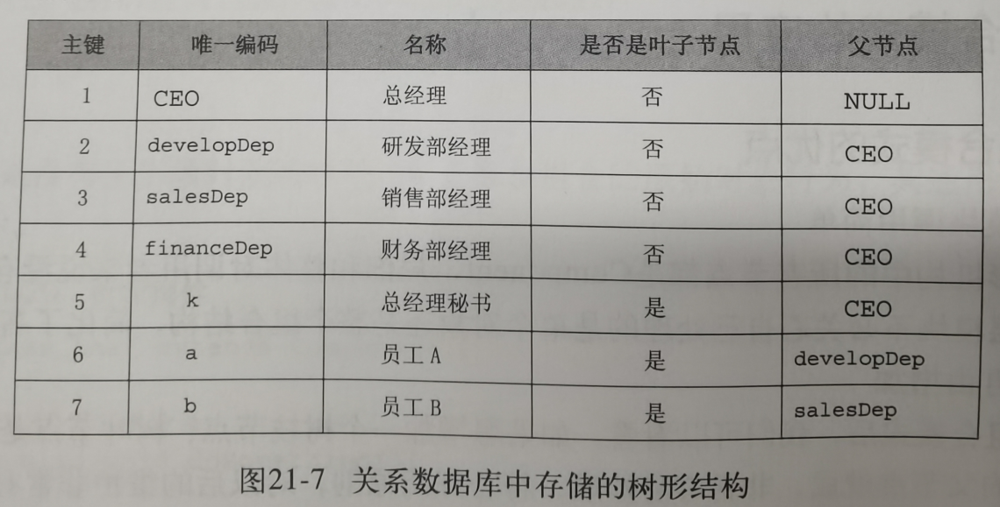
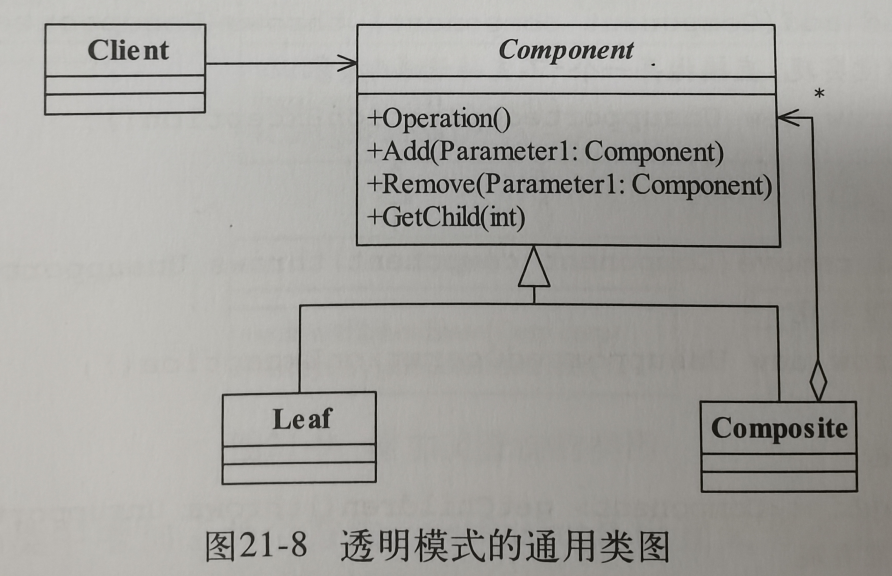
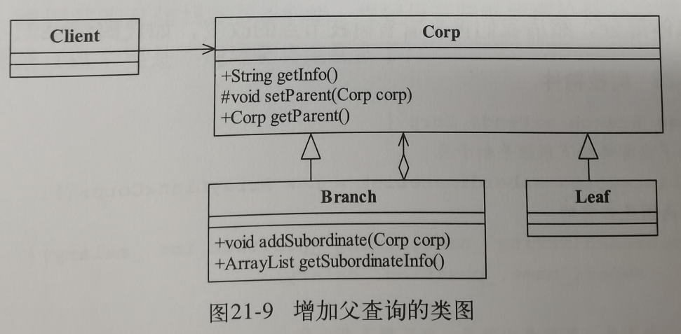

21.组合模式
1.例子引入
1.目标需求,是做一个树状结构

2.初始UML设定
IRoot根节点抽象类:
getInfo获取信息,add添加枝节点,add添加叶节点,getSubordinateInfo获取子节点信息.
IBranch树枝节点抽象类:
和根节点一样
ILeaf叶节点抽象类:
只要获取信息就可以了.
Client客户类:
先定义所有的根,枝,叶对象,然后通过add方法来调用每个对象进行组装.

3.优化-接口合并
很自然我们就想到了第一个优化
IRoot和IBranch都是根节点的逻辑,合并成IBranch
然后我们发现所有的抽象接口都有getInfo自然就把这部分共同的东西抽象上去做成了ICorp接口

4.优化-接口改抽象
然后我们直接把接口改成抽象,把相同的部分都在抽象里面定义好,这样工作又减少了,IBranch和ILeaf接口都给去掉了.

2.正式定义
1.正式定义
Compose objects into tree structures to represent part-shole hierarchies.Composite lets clients treat individual objects and compositions of objects niformly
翻译:将对象组合成树形结构以表示"部分-整体"的层次结构,使得用户对单个对象和组合对象的使用具有一致性.
2.结构分析
Component抽象构建:
定义参加组合对象的共有方法和属性
Leaf叶子构件
叶子对象,最小的遍历单位.
Composite树枝构件
树枝对象,它的作用是组合树枝节点和叶子节点形成一个树状结构,方便后面遍历

3.应用
优点:
1.高层模块的调用简单,因为所有节点都是Component,不用关心处理的是单个还是整体
2.节点自由增加
很容易增加树枝或树叶节点
缺点:
直接使用了实现类,而不是接口,这和依赖倒置原则冲突.
使用场景:树形结构这种相同规律的循环迭代结构就很适合.
4.扩展
1.现实中的组合模式
实际上的组合模式,通常会有专门的业务人员负责把树枝,树叶关系维护到数据库当中.

2.透明模式
透明模式,把Add,Remove都放到抽象方法当中,通过GetChild的逻辑来判断子节点是树枝节点还是树叶节点,优点是很干净,缺点是如果逻辑写的不好,容易出现遍历错误,还不好判断错在哪里.

3.反向遍历
实现反向遍历的方法,那就是让每个节点拥有自己上级的信息,和获取上级节点的方法,这和深度学习中的反向传播思路是一样的,保留对于上级的引用
